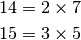
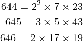

Distinct primes factors¶
Problem 47
The first two consecutive numbers to have two distinct prime factors are:

The first three consecutive numbers to have three distinct prime factors are:

Find the first four consecutive integers to have four distinct primes factors. What is the first of these numbers?
Solution
Use the euler05.primeFactors() function.
from euler05 import primeFactors
The distinct factors: a set built from the prime factor sequence.
def distinctFactors( n ):
"""
>>> from euler47 import distinctFactors
>>> distinctFactors(14)
{2, 7}
>>> distinctFactors(15)
{3, 5}
"""
return set( primeFactors( n ) )
Check for consecutive primes with a given number of distinct factors.
def consecutive( n, steps, distinct ):
"""
>>> from euler47 import consecutive
>>> consecutive( 14, 2, 2 )
True
>>> consecutive( 644, 3, 3 )
True
"""
return all( distinct == len(f) for f in map( distinctFactors, range(n,n+steps) ) )
Test the module components.
def test():
import doctest
doctest.testmod(verbose=0)
Create the answer.
def answer():
n= 2
while not consecutive(n,4,4):
n += 1
return n
Confirm the answer.
def confirm(ans):
assert ans == 134043, "{0!r} Incorrect".format(ans)
Create some output.
if __name__ == "__main__":
test()
ans= answer()
confirm(ans)
print( "The least of the first four consecutive integers to have four distinct primes factors:", ans )